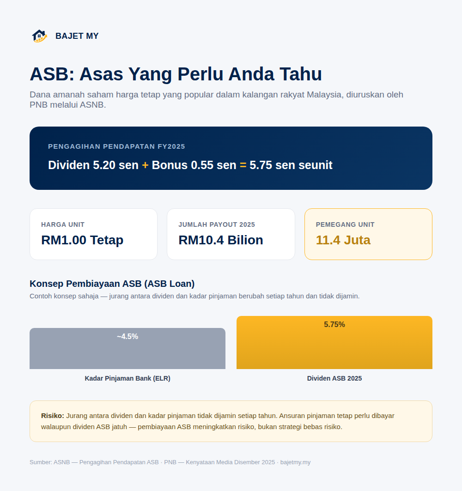

Amanah Saham Bumiputera (ASB), diuruskan oleh Permodalan Nasional Berhad (PNB) melalui Amanah Saham Nasional Berhad (ASNB), merupakan salah satu produk pelaburan paling banyak dipegang oleh rakyat Malaysia. Panduan ini menerangkan asas cara ia berfungsi.

Apa itu ASB?
ASB ialah dana amanah saham dengan harga unit tetap RM1.00, bermakna nilai modal anda tidak turun naik seperti saham biasa atau unit trust harga terapung. Dana ini melabur dalam portfolio aset yang diuruskan oleh PNB, dan keuntungan diagihkan kepada pemegang unit dalam bentuk pengagihan pendapatan tahunan (selalu dirujuk sebagai "dividen").
Bagaimana dividen ASB diagihkan?
Pengagihan pendapatan ASB biasanya terdiri daripada dua komponen:
- Dividen — pengagihan asas berdasarkan prestasi dana
- Bonus — pengagihan tambahan apabila prestasi dana membenarkan
Sebagai contoh, bagi tahun kewangan berakhir Disember 2025, ASNB mengisytiharkan pengagihan pendapatan sebanyak 5.75 sen seunit untuk ASB — terdiri daripada 5.20 sen dividen dan 0.55 sen bonus — dengan jumlah pembayaran RM10.4 bilion kepada 11.4 juta pemegang unit.
Penting: Kadar dividen dan bonus berbeza setiap tahun dan ditentukan oleh prestasi pelaburan sebenar. Jangan anggap kadar tahun lepas sebagai jaminan untuk tahun akan datang.
Siapa layak melabur dalam ASB?
ASB pada asalnya direka khusus untuk Bumiputera Malaysia. Terdapat juga dana lain di bawah ASNB seperti ASB 2 dan ASM (Amanah Saham Malaysia) yang mempunyai kelayakan berbeza — semak kelayakan tepat di laman rasmi ASNB sebelum melabur.
Pembiayaan ASB (ASB Loan)
Sesetengah bank menawarkan pembiayaan khusus untuk melabur dalam ASB — biasa dipanggil "ASB loan". Konsepnya: anda meminjam daripada bank pada kadar faedah tertentu, kemudian melaburkan wang pinjaman itu dalam ASB dengan harapan dividen ASB melebihi kos faedah pinjaman.
Contoh konsep (bukan jaminan):
Jika kadar pinjaman efektif bank sekitar 4.4%–4.75% setahun, dan ASB mengagihkan 5.75% setahun, "jurang positif" kasar adalah sekitar 1.00%–1.35%.
Risiko: Jurang ini tidak dijamin setiap tahun. Jika dividen ASB jatuh di bawah kadar faedah pinjaman pada tahun tertentu, anda masih perlu membayar ansuran pinjaman penuh walaupun pulangan pelaburan lebih rendah. Pembiayaan ASB meningkatkan potensi pulangan, tetapi turut meningkatkan risiko kewangan anda — ia bukan strategi bebas risiko.
Sebelum mengambil pembiayaan ASB, pertimbangkan:
- Adakah anda mampu membayar ansuran bulanan walaupun dividen tahun tersebut rendah?
- Adakah ini menjejaskan DSR anda untuk pinjaman lain seperti rumah?
- Adakah anda selesa dengan risiko meminjam untuk melabur?
ASB berbanding simpanan bank
| ASB | Simpanan/FD Bank | |
|---|---|---|
| Nilai modal | Harga unit tetap RM1.00 | Nilai pokok tetap |
| Pulangan | Berubah setiap tahun, tidak dijamin | Kadar faedah tetap, biasanya diketahui awal |
| Perlindungan PIDM | Tidak dilindungi PIDM | Dilindungi PIDM sehingga had tertentu |
| Kecairan | Boleh dikeluarkan, tertakluk proses ASNB | Sangat cair (terutama akaun simpanan) |
ASB bukan pengganti terus kepada emergency fund kerana ia bukan simpanan dijamin seperti akaun bank yang dilindungi PIDM.
Berapa besar pelaburan ASB boleh berkembang?
Kuasa sebenar ASB datang daripada caruman konsisten + kompaun dari semasa ke semasa, bukan cuba meneka tahun dividen tertinggi. Gunakan kalkulator pertumbuhan pelaburan Bajet MY untuk melihat anggaran berdasarkan jumlah permulaan, caruman bulanan dan andaian kadar pulangan anda sendiri.
Ringkasan
ASB ialah dana amanah saham harga tetap yang popular dalam kalangan rakyat Malaysia, dengan pengagihan pendapatan (dividen + bonus) yang berubah setiap tahun berdasarkan prestasi dana — bukan kadar tetap. Pembiayaan ASB boleh meningkatkan pulangan tetapi turut meningkatkan risiko, kerana ansuran pinjaman perlu dibayar walaupun dividen jatuh. Sentiasa semak kelayakan dan kadar semasa di laman rasmi ASNB.
Sumber
- ASNB — Pengagihan Pendapatan ASB
- PNB — Kenyataan Media Pengagihan Pendapatan